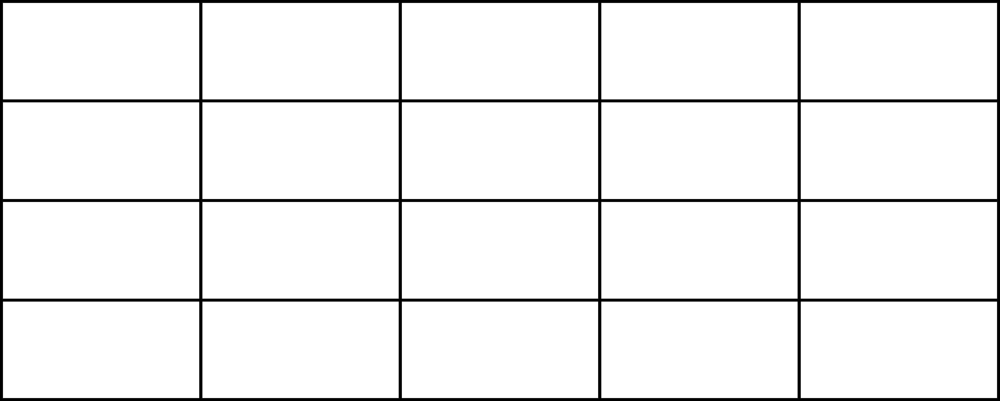
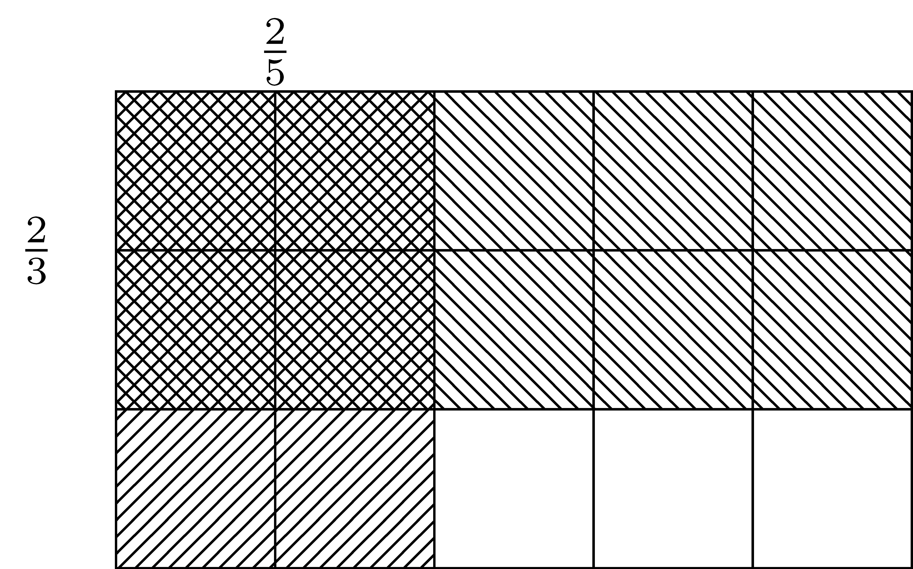
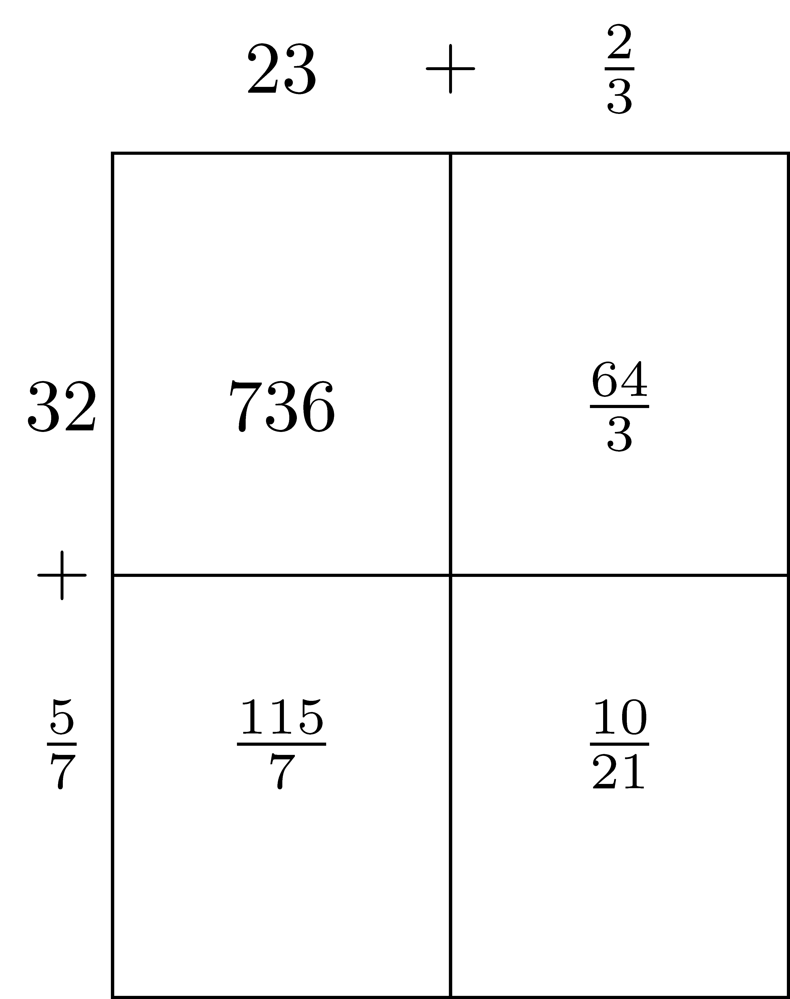
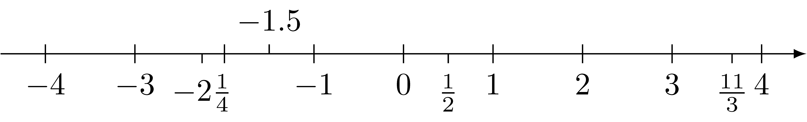

- Preface
- Acknowledgements
- I FOUNDATIONS
- 1 Mathematics Education Foundations
- 2 Set Theory
- 3 Equality, Order, and Equivalence
- 4 Number Systems
- 5 Functions
- II ALGEBRA
- 6 Groups, Rings, and Fields
- 7 Integral Domains and Polynomials
- 8 Real Valued Functions
- III GEOMETRY
- 9 Axiomatic Geometry
- 10 Measurement
- 11 Groups and Geometry
- 12 Euclidean Transformational Geometry
- IV DATA ANALYSIS
- 13 Data Analysis Foundations
- 14 Exploring Data
- 15 Samples, Simulations, and Probability
- 16 Estimating Parameters and Testing Hypotheses
- References
4.4 Representations of Rational Numbers
Each rational number can be represented in several different ways, with the most prominent being as a mixed number, a fraction, a decimal, or a percent. In this section we will discuss how to convert between these different representations and how to use other physical and graphical representations to understand and use rational numbers.
4.4.1 Decimal Representations
It is sometimes helpful to write rational numbers in a decimal representation, rather than fraction notation. This is particularly true in the comparison of two rational numbers. One process for finding the decimal representation from a fraction is long division, but it is often simpler to use technology to find the decimal representation. (It also greatly reduces the amount of error involved.) However, it is important to have a deeper understanding of the decimal representation of rational numbers to verify that the result obtained from a calculator or computer is correct. For instance, if one uses a calculator to find \(\frac{8}{17}\), a calculator with an 8 digit display will give the answer \(0.4705882\), and a calculator with a 16 digit display will give the answer \(0.470588235294118\). There is no apparent repetition in this decimal, leading to the question of if it repeats or not. It is the repeated use of the division algorithm that allows us to determine why a decimal representation of a rational number always repeats.
Related Content Standards
- (7.NS.2) Apply and extend previous understandings of multiplication and division and of fractions to multiply and divide rational numbers.
- Convert a rational number to a decimal using long division; know that the decimal form of a rational number terminates in 0s or eventually repeats.
We will state the division algorithm for integers here, but the proof is in Section ??.
We will explain the process of long division and its relationship to the division algorithm to determine the decimal representation of rational numbers using an example.
In order to find the decimal expansion of \(\frac{7}{12}\), we will first rewrite the rational expression as \(\frac{1}{10} \cdot \frac{70}{12}\). We then note that \(70=12\cdot 5 + 10\) in the division algorithm. Thus, \[\frac{7}{12} = \frac{1}{10} \cdot \frac{70}{12} = \frac{1}{10} \cdot \left( 5 + \frac{10}{12}\right)= \frac{5}{10} + \frac{1}{10} \cdot \frac{10}{12}.\] We continue this process with \(\frac{10}{12}\) so that we have \[\frac{7}{12}= \frac{5}{10} + \frac{1}{10^2} \left(\frac{100}{12}\right) = \frac{5}{10} + \frac{1}{10^2} \left(8 + \frac{4}{12}\right)= \frac{5}{10} + \frac{8}{10^2} + \frac{1}{10^2} \cdot \frac{4}{12}.\] We continue the process, so that \[\frac{7}{12} = \frac{5}{10} + \frac{8}{10^2} + \frac{1}{10^3} \cdot \frac{40}{12} = \frac{5}{10} + \frac{8}{10^2} + \frac{3}{10^3} + \frac{1}{10^3} \cdot \frac{4}{12}.\] We notice that this remainder of \(4\) again tells us that we will get the same quotient again and again. Therefore, we see that \(\frac{7}{12} = 0.58\overline{3}\).
As we can see with this process, a decimal will start repeating when a remainder in the division algorithm is repeated. Since the only possible remainders of a quotient by \(12\) are in the set \(\{0,1,2,3,4,5,6,7,8,9,10,11\}\), we see that any decimal representation of a fraction whose denominator is \(12\) will repeat after at most 11 places.
Similarly, the decimal representation for any rational number will eventually repeat. This repetition may be of the digit \(0\), in which case we will call it a finite decimal expansion, or it may be a different number of digits, in which we will call it a repeating decimal expansion. In the case of \(\frac{7}{12}\), we see that the repeating happens after a certain number of digits. These types of decimal representations will be called delayed repeating decimal expansions. One can determine the type of decimal expansion based on the prime factorization of the denominator, once the fraction is written in its simplified form.
Related Content Standards
- (8.NS.1) Know that numbers that are not rational are called irrational. Understand informally that every number has a decimal expansion; for rational numbers show that the decimal expansion repeats eventually, and convert a decimal expansion which repeats eventually into a rational number.
Now that we know that all rational numbers can be represented by decimal expansions that are finite, repeating, or delayed repeating, we will study the process of starting with a decimal representation and determining a fraction representation. We already know that if the decimal representation does not repeat that it does not correspond to a rational number.
If the number has a finite decimal expansion, then it can be converted to a fraction using the base ten representation. For instance the number \(3627.854\) can be rewritten as \(\frac{3627854}{1000}\).
Let’s look at a decimal expansion that is repeating like \(0.\overline{35682}\). This could be written in the form \[0.\overline{35682}= \frac{10^5}{10^5} 0.\overline{35682} = \frac{1}{10^5} \cdot 35682.\overline{35682} = \frac{1}{10^5} \left( 35682 + 0.\overline{35682}\right).\] We can rearrange this equation so that \[10^5 \cdot 0.\overline{35682} - 0.\overline{35682} = 35682\] or equivalently that \[0.\overline{35682} = \frac{35682}{10^5-1}.\] This same process can be used to find the fractional representation of any rational number with a repeating decimal expansion.
If a rational number has a delayed repeating decimal expansion, then one can rewrite the number in a way to generate a repeating decimal. For instance, \[324.51\overline{89} = \frac{10^2}{10^2} \cdot 324.51\overline{89} = \frac{1}{10^2} \left( 32451.\overline{89}\right) = \frac{1}{10^2} \left( 32451+\frac{89}{10^2-1} \right) = \frac{(32451\cdot 99)+89}{9900}.\]
4.4.2 Physical and Graphical Representations
Related Content Standards
- (6.NS.1) Interpret and compute quotients of fractions, and solve word problems involving division of fractions by fractions, e.g., by using visual fraction models and equations to represent the problem. For example, create a story context for \(\frac{2}{3} \div \frac{3}{4}\) and use a visual fraction model to show the quotient; use the relationship between multiplication and division to explain that \(\frac{2}{3} \div \frac{3}{4} = \frac{8}{9}\) because \(\frac{3}{4}\) of \(\frac{8}{9}\) is \(\frac{2}{3}\). (In general, \(\frac{a}{b} \div \frac{c}{d} = \frac{ad}{bc}\).) How much chocolate will each person get if 3 people share \(\frac{1}{2}\) lb of chocolate equally? How many \(\frac{3}{4}\)-cup servings are in \(\frac{2}{3}\) of a cup of yogurt? How wide is a rectangular strip of land with length \(\frac{3}{4}\) mi and area \(\frac{1}{2}\) square mi?
Consider the following problem from the Singapore Mathematics Curriculum:
Jenny, Bob, and Paul shared a sum of money. Jenny received \(\frac{2}{5}\) of the money, Bob received \(\frac{1}{4}\) of the money and Paul received the rest of the money. If Paul received \(\$1.50\) more than Bob, how much more money did Jenny receive than Paul.
While this is not a modeling problem, in that this type of situation would never be described in this way, it does help generate fluency in working with different representations of rational numbers. We will walk through one possible solution that does not use variables, but does build the conceptual understanding necessary for successful work in algebra.
The first thing that we notice is that we need a way to represent \(\frac{2}{5}\) and \(\frac{1}{4}\) of the same whole. As such, we need our whole item to be broken into \(20\) equal sized pieces.

We then note that Jenny received \(\frac{2}{5}\) of the money, which is equivalent to \(\frac{8}{20}\) of the money. So we will mark \(8\) of the pieces with a J. Similarly, Bob received \(\frac{1}{4}\) of the money and so we will mark \(5\) pieces with a B.

We then see that Paul received the equivalent of 7 blocks, while Bob received 5 blocks. Since Paul received \(\$1.50\) more than Bob we know that 2 blocks is equivalent to \(\$1.50\), making each block represent \(\$0.75\). Since Jenny received the equivalent of 1 block more than Paul we see that she received \(\$0.75\) more than Paul.
There are many other ways to solve this problem that also develop numerical fluency with rational numbers, and the more ways that students can represent these numbers and move between the representations, the more fluent they will be with the rational number system.
4.4.2.1 Fraction Strips
One common tool used to help students determine equivalent fraction representations is through the use of fraction strips. These are pieces of paper (all the same size), but marked off in different numbers of parts. Then by setting the pieces of paper next to each other, students are able to notice equivalency of fractions. For instance, in the fraction strips below one can see that \(\frac{1}{2}\) is equivalent to \(\frac{2}{4}\).

One can also use fraction strips to represent the operation of division of fractions. For instance if we have the two fraction strips below we can use them to determine that \(\frac{1}{2} \div \frac{1}{6} = 3\) because \(3\) of the \(\frac{1}{6}\) regions can fit inside of the \(\frac{1}{2}\) region.
4.4.2.2 Pattern Blocks
Another tool to help students work with fractions are pattern blocks. The pattern blocks most useful for many of the fractions that students use are the hexagon, triangle, trapezoid, and rhombus below.

Students can see that \(6\) triangles, \(2\) trapezoids, or \(3\) rhombi fit inside of the hexagon. So we can represent \(\frac{2}{3}\) as two rhombi, with one hexagon representing the whole. One can then see that fractions whose denominator is \(2\), \(3\), or \(6\) are easily represented using one hexagon as the whole. However, if we allow two hexagons to represent the whole, we can represent fractions with denominators of \(2\), \(3\), \(4\), \(6\), or \(12\). One can also think about \(\frac{1}{2} \div \frac{1}{3}\) as how many rhombi fit inside of one trapezoid.
4.4.2.3 Area Model
The area model described in Section 4.2 can help students to visualize multiplication of fractions. For instance, one can find the product of \(\frac{2}{5}\) and \(\frac{2}{3}\) using the following diagram. One can then see that \(\frac{4}{15}\) of the squares are shaded. So \(\frac{2}{5} \times \frac{2}{3} = \frac{4}{15}\).

We are also able to build upon the area model to visualize the distribution property involved in the multiplication of mixed numbers. If we want to find \(23\frac{2}{3} \times 32 \frac{5}{7}\), then we have to remember the convention that \(23\frac{2}{3} = 23 + \frac{2}{3}\) and \(32\frac{5}{7}= 32 + \frac{5}{7}\). (Note how confusing this convention can be for students, particularly since in algebra two numbers next to each other represent multiplication instead of addition.) We can then allow for an abstract area representation (the sizes are not proportional) to more easily use the distributive property.

There are many other tools that can help students understand rational numbers and their operations, but we will leave those for more pedagogically oriented sources.
4.4.2.4 Number Line and Plane
It is also important for students to use rational numbers on a number line (and the associated plane). In particular, the number line can help students understand inequalities, relationships between different numbers, and the absolute value of a number. Some key factors to keep in mind are to not only have fractions between \(0\) and \(1\), or only mixed numbers outside of that interval. Students need to use a variety of different numbers and representations together to gain fluency.

Related Content Standards
- (6.NS.7) Understand ordering and absolute value of rational numbers.
- Interpret statements of inequality as statements about the relative position of two numbers on a number line diagram.
- Write, interpret, and explain statements of order for rational numbers in real-world contexts.
- Understand the absolute value of a rational number as its distance from 0 on the number line; interpret absolute value as magnitude for a positive or negative quantity in a real-world situation.
- Distinguish comparisons of absolute value from statements about order.
4.4.3 Exercises
Explain, in a way that a middle school student can understand, how to determine the type of decimal expansion for any given fraction representation of a rational number and why it is that way. (i.e. when is the decimal expansion finite? when does it repeat? when is it delayed periodic? what do each of these mean?)
For each of the following, give an example of a rational number in the form of \(\frac{p}{q}\) with the appropriate decimal representation and explain why it works.
- has a terminating decimal with 4 decimal places
- has a non-zero integer part and a delay of 3 decimal places before a periodic part with period of 3 digits.
- has a periodic decimal representation with 5 digits.
For each of the following, give the representation of the rational number in the form of \(\frac{p}{q}\), with \(p\) and \(q\) relatively prime (no common factors):
- \(0.156\)
- \(0.23\overline{4}\)
- \(23.\overline{15}\)
- \(3.14159\)
- \(2.5\overline{9}\)
- \(2016\)
Write an algorithm in the programming language of your choice to input a decimal representation of a rational number and output a fraction representation.
Classify each of the following real numbers as
- a terminating decimal,
- simple periodic decimal (note its period),
- delayed periodic decimal (note its delay and period), or
- non-periodic decimal
- \(\frac{1}{6}\)
- \(\frac{1}{2}\)
- \(\frac{2}{14}\)
- \(\frac{3}{20}\)
- \(\frac{4}{63}\)
- \(\pi\)
- \(\sqrt{2}\)
- \(\sqrt{5}\)
- \(\frac{18}{40}\)
- \(0.75\)
- \(0.83\overline{45}\)